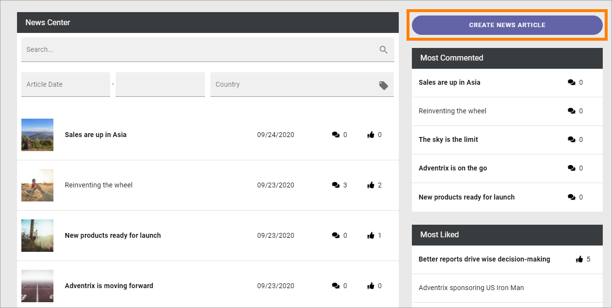
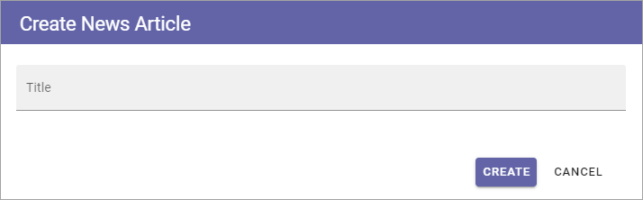
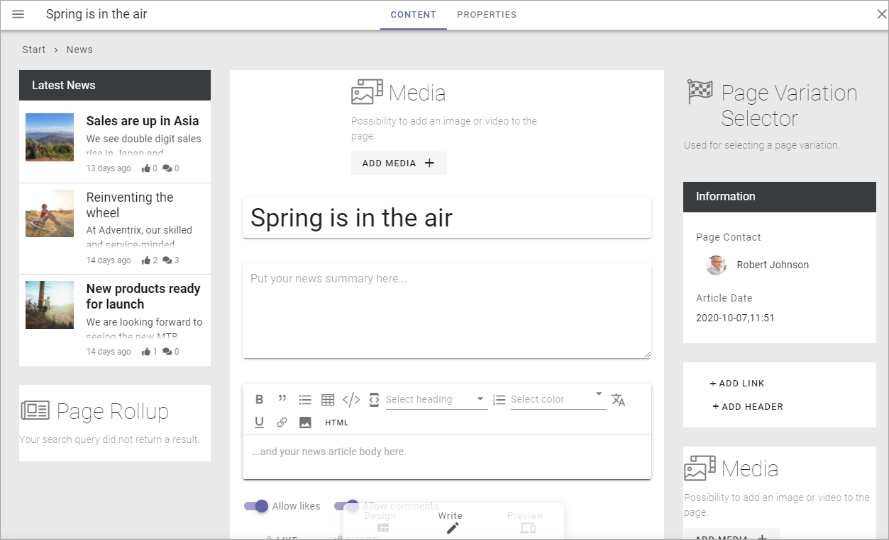
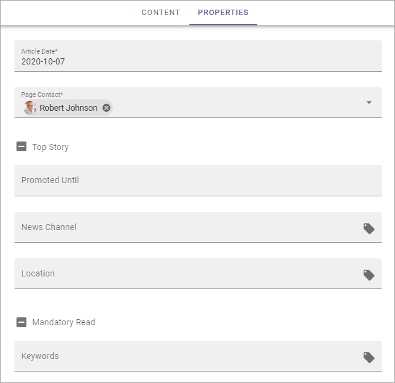
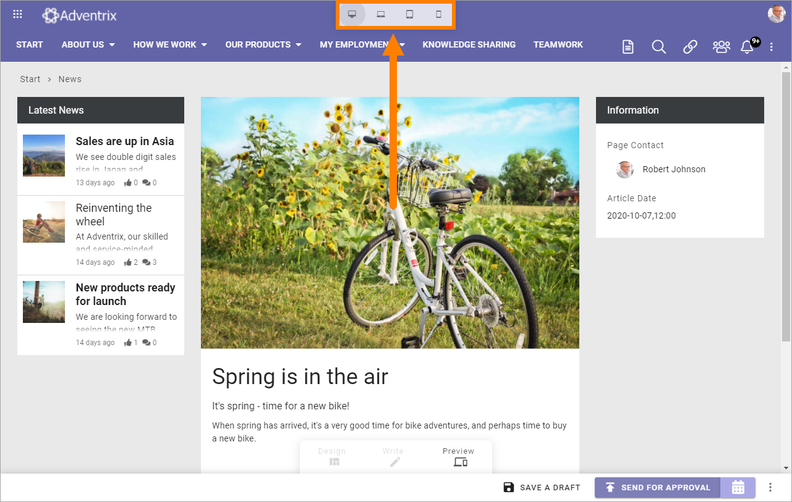

Create News¶
Colleagues with the right permission can create and publish news in a specific News Center. It’s very common that only a dedicated group of authors can do that but it’s also possible that all colleagues have this permission.
If you have the permission necessary to create news, this button is shown in the News Archive. The button can also be made available on other pages.
To create a new news article, click the button.
The following is shown:
Type a file name for the new News article (page) and click “Create”.
This creates a page for the news article. All options for pages can be used for news article pages.
Something like the following is shown:
Available blocks and more depends on how the Page Type (page template) for news is set up.
You can see that the file name you entered in the previous step is suggested as the bews article’s heading (“Spring is in the air” in this example). It can be edited if needed.
What you actually need to do depends on the Page Type (template) for news. Here’s some common steps that you should be able to do using Write mode:
Add an image. A part of that image can also be used as the image in a News list (which is automatic if used).
Add a short introduction in the third block (“Put your news summary here …”), under the heading, just click and write.
Add the content in the Text block below the introduction.
Add content to other blocks as necessary.
You most likely will just need permissions to use Write mode to be able to create and publish a news article.
When you use the Media block to add an image (which you most likely will do), you use the Media Picker. See this page for more information: The Media Picker
Regarding the Text block, see this page for more information about the available options for text, links and images: The RTF Editor
If you have permissions to use Design mode you can edit the settings for the blocks, see: Working with blocks
For more information about a specific block, select the block in this list: About blocks
When you’re finished here, click “Next”.
Set the Properties.
Available properties depends on how the Page Type for News is set up. Here’s an example:
Article Date: Todays date is added to the field. The date can be edited if needed. In a news list, the articles are sorted on Article Date. If you’re working on an article for a while, the date will not be updated automatically, so you may have to edit it before publishing.
Page Contact: This is shown under the image on the news article’s page. Your name is added automatically. If someone else should be the Page Contact, remove your name and add the colleague’s name.
Top Story: Regard it as “a very important news setting”, if present. In certain news listings, top stories can be viewed differently from other news.
Metadata tagging for News can be set up in many ways and also used in many ways, for example to display different news articles for different user groups. “Promoted Until”, “News Channel”, “Location”, “Mandatory Read” and “Keywords” are examples of metadata, and you will receive information from your organization about how to use the metadata.
When you’re done here, click “Next”.
A preview is now shown. Note that you can test how the News article will look on different devices:
Save the news article as a draft to continue working on it later, or publish it directly. There can also be other publishing options available. In this example approval is needed before a news article can be published and scheduled publishing is also available.
To get som more information about the publishing options, for example scheduled publishing, if available, see this page for more information: Publish page changes
Continue working on a saved News Article¶
Do the following:
Go to the News Center/News Archive.
Click the icon to open the editor.

Find the news article in the list and click it.

You can now edit the contents and publish it when it’s finished, as described above.